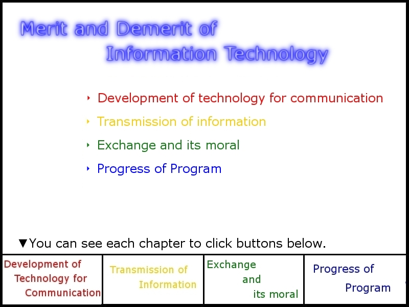
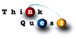

 About this site
This site is gathered merit and demerit brought by information technology.
This site is entered in "13th ThinkQuest JAPAN"(2010). This site is made up of 4 themes: *Chapter "Development of Tachnology for Communication" *Chapter "Transmission of Information" *Chapter "Exchange and Its moral" *Chapter "Progress of Program" And you can see each theme to click menu button above each page. Please check sitemap if you want to know more. You can see the meaning of word to point the word of this color on the sentence. Recommended specification
This site is composed basically you see this by Internet Explorer 8.
We're sure you can see this site rightly by Internet Explorer 7, 9 Beta, Firefox 3, Google Chrome, Opera, Safari. This site is entered in "13th ThinkQuest JAPAN" of section in regulation. We used only HTML, CSS, still pictures in this site. Therefore, you don't have to be effective javascript, etc. Bibliography
Written in Japanese Top Page. |


|
(c) 2010-2011 Team "Merit and Demerit of Information Technology" All rights reserved. Created by ez-HTML |